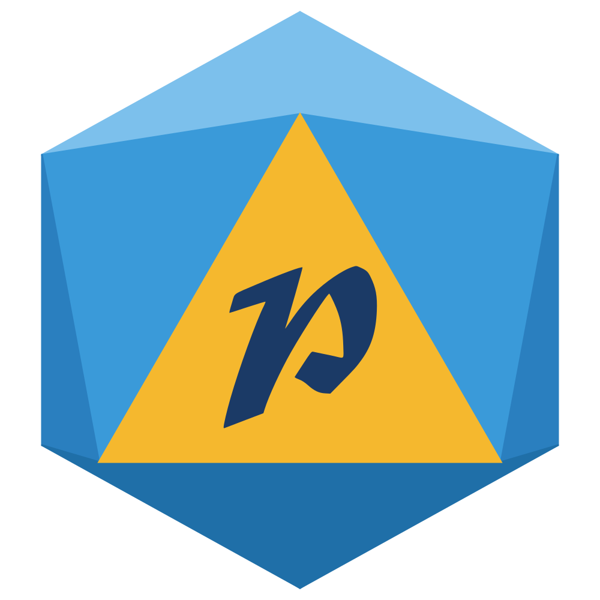

<!DOCTYPE html>
<html lang="fr">
<head>
<meta charset="UTF-8">
<title>Scène — JDR</title>
<link rel="stylesheet" href="../css/theme.css">
<link rel="stylesheet" href="../css/composants.css">
<link rel="stylesheet" href="../css/bouffon.css">
<link rel="stylesheet" href="../css/jdr.css">
</head>
<body>
<!--
  Scène « JDR » (disposition A, la table en grand) : la table CodexVTT en grand, les cartes des héros en dessous,
  et à droite le titre de la campagne puis le chat ; pendant un jet de dés, l'arène (où le héros joue son jet)
  passe par-dessus le chat, qui revient ensuite.
  Dans OBS, place la capture de CodexVTT SOUS cette source, dans la zone :
    Table : x 40 · y 36 · 1500 × 844 px   (canevas 1440p : x 53 · y 48 · 2000 × 1125)
  La table de jeu (qui joue quel personnage) : reglages.html › Scène JDR (config.js › jdr).
  Options : ?chat=0 · ?test=1 (paroles, PV et jets de dés au hasard, pour voir) · ?apercu=1 (la zone de la table) · ?titre=…
  CodexVTT (mode spectateur, js/codex.js) : jets de dés joués dans l'arène, PV sous les cartes (« à terre » à 0),
  coups et soins, tour de combat. Adresse + clé : reglages.html › Scène JDR. La forme de Trayss se choisit dans le
  tableau des réglages (colonne Personnage), pas depuis CodexVTT.
  ?journal=1 : l'état de la connexion à CodexVTT et les derniers événements, à l'écran.
  CodexVTT et Discord passent par le moteur commun js/partie.js (objet Partie) ; Patagrain ne fait que dessiner.
  Discord (bot « voix » du VPS, js/voix.js) : la carte de celui qui parle s'anime. Chaque place est reliée à son
  joueur par la colonne « Discord » des réglages (pseudo, nom affiché ou identifiant). Clé : reglages.html › Scène JDR.
-->
<div id="ecran"></div>

<script src="../config.js"></script>
<script src="../mes-reglages.js"></script>
<script src="../js/couleurs.js"></script>
<script src="../js/options.js"></script>
<script src="../js/commun.js"></script>
<script src="../js/evenements.js"></script>
<script src="../js/chat.js"></script>
<script src="../js/composants.js"></script>
<script src="../js/heros.js"></script>
<script src="../js/jdr.js"></script>
<script src="../js/jets.js"></script>
<script src="../js/socket.io.min.js"></script>
<script src="../js/codex.js"></script>
<script src="../js/voix.js"></script>
<script src="../js/partie.js"></script>
<script>
  const ecran = document.getElementById('ecran');
  const C = CONFIG.jdr || {};
  const p = Commun.params;
  const TABLE = { x: 40, y: 36, l: 1500, h: 844 };
  const COLONNE = { x: 1580, l: 300 };            // à droite de la table : le titre, puis le chat et l'arène (au même endroit)
  const voir = cle => p.get(cle) !== '0';

  // --- le décor : la table de jeu est un trou transparent (OBS y place la capture de CodexVTT) ---
  Composants.fondDecoupe(ecran, [TABLE]);
  Composants.cadre(ecran, TABLE, { decor: false, nom: false, apercuTitre: 'Table CodexVTT' });

  // --- le titre de la campagne, en haut à droite ---
  const titre = p.has('titre') ? p.get('titre') : (C.titre || '');
  const fronton = document.createElement('div');
  fronton.className = 'jdr-titre';
  Object.assign(fronton.style, { left: COLONNE.x + 'px', top: TABLE.y + 'px', width: COLONNE.l + 'px', height: '220px', boxSizing: 'border-box' });
  fronton.innerHTML = '<small>Campagne</small><b></b>';
  fronton.querySelector('b').textContent = titre || 'Jeu de rôle';
  ecran.appendChild(fronton);

  // --- à droite, sous le titre : le chat, et l'arène des jets qui passe par-dessus pendant un jet ---
  const BAS = { x: COLONNE.x, y: TABLE.y + 240, l: COLONNE.l, h: 1044 - (TABLE.y + 240) };
  const chat = voir('chat') ? Composants.chat(ecran, BAS) : null;
  const arene = document.createElement('div');
  arene.className = 'arene' + (chat ? ' sur-chat' : '');
  Object.assign(arene.style, { left: BAS.x + 'px', top: BAS.y + 'px', width: BAS.l + 'px', height: BAS.h + 'px' });
  ecran.appendChild(arene);
  // un jet commence (l'arène se remplit) : le chat s'efface ; le jet fini, il revient
  if (chat) new MutationObserver(() => chat.classList.toggle('sous-jet', arene.childElementCount > 0)).observe(arene, { childList: true });
  const jets = Jets.monter(arene, { duree: (Number(C.dureeResultat) || 4) * 1000, heros: jet => JDR.pied(jet.heros || 'autre') });

  // --- les cartes des héros, en bandeau sous la table ---
  // La table est celle des réglages (jdr.places : le MJ, puis les places 1 à 6), affichée tout de suite, même sans
  // CodexVTT. Le moteur commun (js/partie.js) la relie aux fiches CodexVTT (par le nom) et y ajoute, à la fin, les
  // personnages de CodexVTT qui n'ont pas de place (dessinés en « autre » : le portrait de leur fiche).
  // Le rang : toute la largeur sous la table, une carte horizontale par personnage (comme les autres overlays)
  const RANG = { x: TABLE.x, y: TABLE.y + TABLE.h + 18, l: TABLE.l, h: 1044 - (TABLE.y + TABLE.h + 18) };
  const bande = document.createElement('div');
  bande.style.cssText = `position:absolute;left:0;top:0`;
  ecran.appendChild(bande);
  if (C.attenue !== false) document.body.classList.add('attenue');
  const cartes = new Map();                      // clé (place réglée, ou « c<id de fiche> ») → la carte
  const cle = p => p.place || 'c' + p.id;
  const carte = p => p && cartes.get(cle(p));
  // (Partie appelle « fiche » l'id de la fiche CodexVTT : on range la nôtre — nom, sous-titre, couleur — sous « infos »)
  const PLACES = JDR.table().map(t => ({ ...t, infos: t.fiche, fiche: null, nom: t.fiche.nom, mj: t.place === 'mj' }));
  // ce que CodexVTT sait d'un perso, posé sur sa carte : PV, portrait d'un perso sans dessin
  function majCarte(p) {
    const el = carte(p);
    if (!el) return;
    if (el.dataset.perso === 'autre' && p.portrait) el.photo(p.portrait);
    if (p.pvMax > 0) el.pv(p.pv, p.pvMax);
  }
  function majTable(persos) {
    const vues = new Set();
    persos.forEach(p => {
      const k = cle(p);
      vues.add(k);
      if (!cartes.has(k)) {
        const t = p.place ? { ...p, fiche: p.infos } : { place: k, perso: 'autre', joueur: '', discord: '', fiche: { nom: p.nom, titre: '', couleur: JDR.teinte(p.nom) } };
        cartes.set(k, JDR.portrait(t));
      }
      bande.appendChild(cartes.get(k));          // dans l'ordre de la table
      cartes.get(k).moi(p.moi);
      majCarte(p);
    });
    for (const [k, el] of cartes) if (!vues.has(k)) { el.remove(); cartes.delete(k); }
    // largeur d'une carte : le rang partagé, sans dépasser 420 px (une carte seule ne s'étale pas) ; « toi » un peu plus haute
    const n = Math.max(1, persos.length), ecart = 20, l = Math.min(420, (RANG.l - ecart * (n - 1)) / n);
    persos.forEach((p, i) => {
      const z = { x: Math.round(RANG.x + i * (l + ecart)), y: RANG.y, l: Math.round(l), h: RANG.h };
      if (p.moi) { z.y -= 14; z.h += 14; }
      cartes.get(cle(p)).placer(z, n > 6 ? 1.25 : n > 5 ? 1.5 : n > 4 ? 1.65 : 1.85);
    });
  }

  // --- CodexVTT (moteur commun) : jets, PV, coups et soins, tour de combat, PNJ ---
  const PNJ = C.pnj || {};
  Partie.brancher({
    table: majTable,
    perso: majCarte,
    coup: (p, delta) => carte(p)?.coup(delta),
    tour: p => { cartes.forEach(el => el.tour(false)); carte(p)?.tour(true); },
    jet: j => {
      const el = carte(j.perso);
      if (el) return jets.jouer({ ...j, labelFr: j.libelle, heros: el.dataset.perso, couleur: el.style.getPropertyValue('--c'), portrait: el.dataset.photo || '' });
      // un PNJ ou une créature du MJ (jet PUBLIC) : joué par l'aventurier encapuchonné, à la couleur des PNJ
      if (j.pnj && PNJ.jouer !== false) jets.jouer({ ...j, labelFr: j.libelle, heros: 'autre', couleur: PNJ.couleur || '#5A2A3A' });
    },
  }, { places: PLACES });

  // --- Discord (moteur commun, bot « voix » du VPS) : la carte de celui qui parle s'anime ---
  // ?test=1 : la démo du moteur commun (table, PV, un jet toutes les 6 s) et quelqu'un qui parle au hasard.
  Partie.voix((p, oui) => carte(p)?.parler(oui));

  Commun.demarrer();
  Evenements.demarrer();
</script>
</body>
</html>
